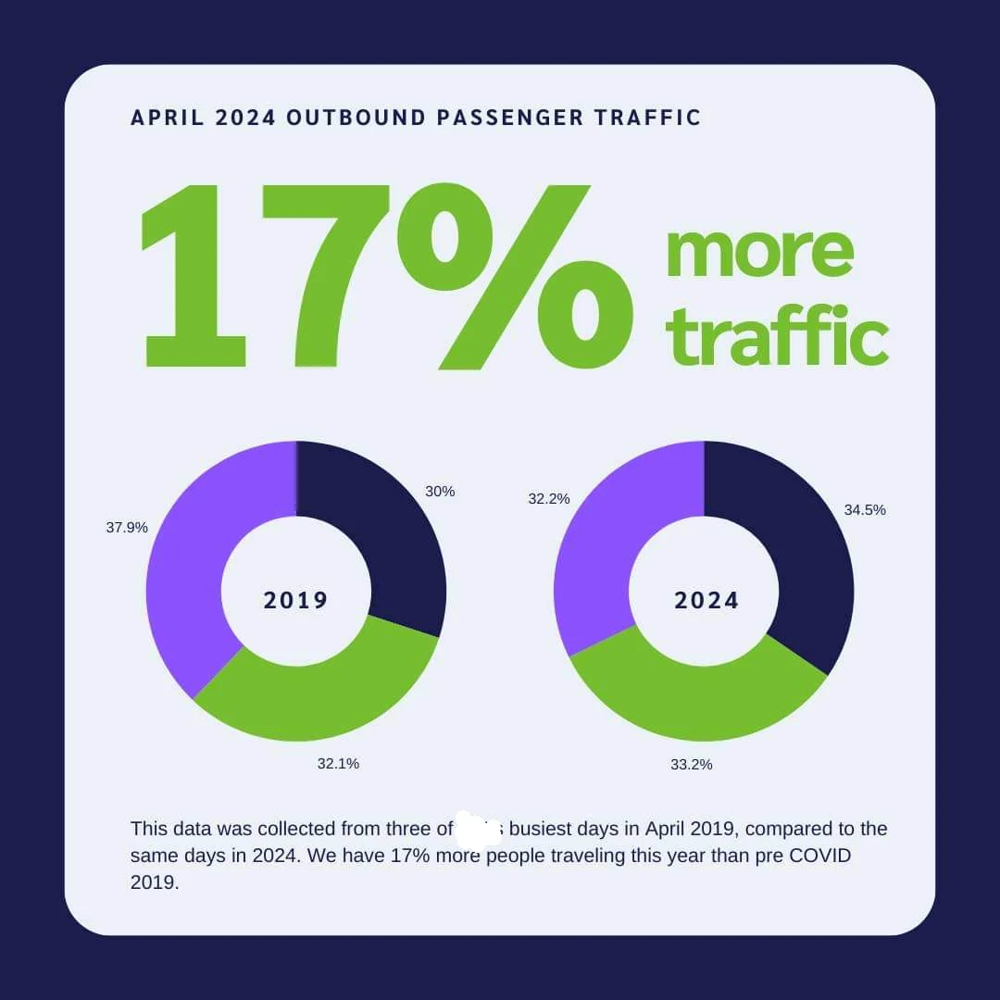
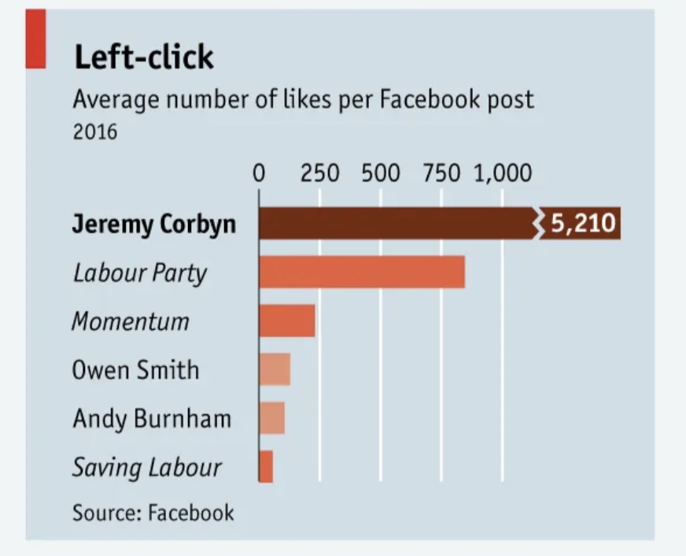

Critique of Visualizations
This analysis examines two visualization examples by focusing on data issues and idiom (design) issues, using the “what – why – how” model and a 4-step validation framework (domain, data, idiom, tech).
Example 1: [Number of outbound airport passengers]
Description

A short description of what the visualization is intended to represent.
Data Issues
- Scale & Accuracy: The y-axis is truncated, exaggerating differences between values.
- Missing/Inaccurate Data: Some data points seem inconsistent with the original data source.
Idiom Issues
- Visual Clutter: Excessive colors and decorative elements make the core message hard to extract.
- Inappropriate Chart Type: A pie chart is used to compare too many categories, making distinctions unclear.
Suggestions for Improvement
- Use a full-scale y-axis to represent data accurately.
- Simplify the color scheme or switch to a bar chart for better comparisons.
Example 2: [Title or Source]
Description

A brief explanation of what the second visualization shows.
Data Issues
- Data Representation: Data values lack clear labeling, which creates confusion about what is measured.
- Miscalculation/Alignment: The aggregation of data isn’t clearly defined, leading to misinterpretation.
Idiom Issues
- Overuse of Decorative Elements: Unnecessary 3D effects distort actual values and distract the viewer.
- Poor Typography/Spacing: Labels and legends are too small or cluttered, reducing readability.
Suggestions for Improvement
- Add clear axis labels and data annotations.
- Remove or simplify 3D effects and use a flat design for clarity.
- Improve spacing and typography for enhanced readability.
Conclusion
Both examples highlight key issues in data representation and visual design. By applying the “what – why – how” model and the 4-step validation framework, designers can avoid misleading practices and create clearer, more effective visualizations.
Tips for Creating Effective Visualizations
- Keep your critique concise using short paragraphs or bullet points.
- Relate your observations back to the visualization model and validation framework.
- Offer actionable suggestions for improvement.
- Use real-world examples (e.g., from Data Is Beautiful or related blogs) to illustrate your points.